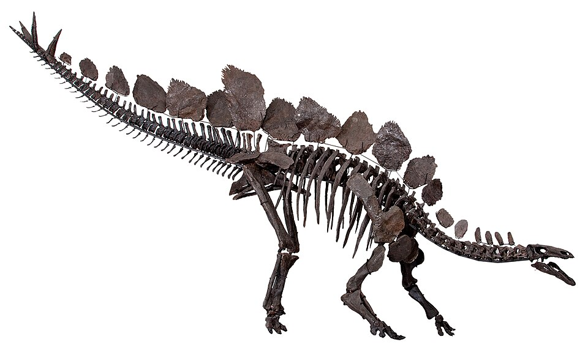

Triceratops adalah genus dinosaurus herbivora berkaki empat dari famili Ceratopsidae yang hidup pada akhir periode Kapur, sekitar 68 hingga 66 juta tahun lalu di wilayah yang sekarang menjadi Amerika Utara. Ciri khas utamanya adalah tengkorak berukuran sangat besar yang dilengkapi tiga tanduk—dua tanduk panjang di atas mata dan satu tanduk kecil di atas moncong—serta jambul tulang lebar di belakang kepalanya yang berfungsi untuk pertahanan diri maupun interaksi sosial. Dengan panjang tubuh mencapai 9 meter dan bobot hingga 12 ton, dinosaurus ini menggunakan paruh keras dan barisan gigi penggilingnya untuk mengonsumsi tanaman rendah yang keras sebelum akhirnya punah dalam peristiwa kepunahan massal Kapur-Tersier.

Brachiosaurus adalah genus dinosaurus sauropoda herbivora raksasa yang hidup pada akhir periode Jura, sekitar 154 hingga 150 juta tahun lalu di wilayah Amerika Utara. Berbeda dengan mayoritas sauropoda lainnya, Brachiosaurus memiliki kaki depan yang lebih panjang daripada kaki belakangnya, membuat tubuhnya meluncur naik ke arah bahu dengan leher panjang yang menjulang tegak lurus ke atas. Dengan tinggi mencapai 12–13 meter, panjang tubuh sekitar 23 meter, dan bobot diperkirakan berkisar antara 28 hingga 58 ton, dinosaurus ini memanfaatkan posturnya yang tinggi untuk menjangkau dedaunan pucuk pohon yang tidak bisa digapai oleh herbivora lainnya.

Stegosaurus adalah genus dinosaurus herbivora bertubuh besar yang hidup pada akhir periode Jura, sekitar 155 hingga 150 juta tahun lalu di wilayah Amerika Utara dan Eropa. Ciri paling menonjol dari dinosaurus berkaki empat ini adalah dua baris lempeng tulang besar berbentuk pipih yang tumbuh tegak di sepanjang punggungnya, serta empat duri tajam di ujung ekornya yang dikenal sebagai thagomizer untuk pertahanan diri dari predator. Memiliki panjang tubuh sekitar 9 meter dan bobot hingga 5 ton, Stegosaurus unik karena proporsi otaknya yang sangat kecil seukuran buah kenari dibandingkan ukuran tubuhnya yang besar, serta postur kepalanya yang rendah ke tanah untuk menyantap vegetasi semak.

Tyrannosaurus rex, atau T-rex, adalah genus dinosaurus karnivora bipedal dari famili Tyrannosauridae yang hidup pada akhir periode Kapur, sekitar 68 hingga 66 juta tahun lalu di wilayah Amerika Utara. Ciri khas utamanya adalah tengkorak besar dengan rahang sangat kuat yang dilengkapi gigi-gigi bergerigi sepanjang hingga 30 sentimeter, sanggup menghancurkan tulang mangsanya dengan daya gigit terkuat di antara hewan darat yang pernah ada. Memiliki panjang tubuh sekitar 12 meter, tinggi 4 meter, dan bobot mencapai 8 ton, T-rex berjalan menggunakan dua kaki belakang yang kekar, sementara lengan depannya berukuran sangat kecil dengan dua jari tercakar yang tajam.

Velociraptor adalah genus dinosaurus dromaeosaurid karnivora berukuran relatif kecil yang hidup pada akhir periode Kapur, sekitar 75 hingga 71 juta tahun lalu di wilayah Asia, khususnya Mongolia dan Tiongkok. Berbeda dengan penggambaran populisnya yang besar, Velociraptor sebenarnya hanya seukuran serigala modern dengan panjang tubuh sekitar 2 meter, tinggi 0,5 meter di pinggul, dan tubuh yang ditutupi bulu-bulu menyerupai burung. Dinosaurus bipedal ini berburu dengan mengandalkan kecepatan, kecerdasan, serta cakar melengkung berbentuk sabit yang tajam pada jari kedua kaki belakangnya untuk mencengkeram dan melumpuhkan mangsa.

Spinosaurus adalah genus dinosaurus karnivora raksasa dari famili Spinosauridae yang hidup pada pertengahan periode Kapur, sekitar 99 hingga 93 juta tahun lalu di wilayah Afrika Utara. Dikenal sebagai dinosaurus karnivora terbesar yang pernah ada dengan panjang mencapai 14 hingga 18 meter dan bobot hingga 9 ton, ciri paling mencoloknya adalah sirip tulang besar di punggungnya yang menyerupai layar serta moncong panjang pipih seperti buaya. Penemuan fosil modern menunjukkan bahwa Spinosaurus adalah dinosaurus semi-akuatik yang menghabiskan banyak waktunya di air, menggunakan ekornya yang lebar menyerupai dayung dan gigi-gigi kerucutnya untuk berburu ikan raksasa serta mangsa air lainnya.